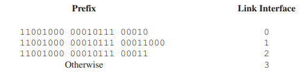

What's Inside a Router
What’s Inside a Router?
In a high-level view of a generic router architecture, four router components can be identified:
- Input ports.
- Switching fabric.
- Output ports.
- Routing processor. performs control-plane functions.
We distinguish between
- Destination-based forwarding.
- Generalized forwarding.
Input Port Processing and Destination-Based Forwarding
With this style of forwarding table, the router matches a prefix of the packet’s destination address with the entries in the table.
When there are multiple matches, the router uses the longest prefix matching rule; that is, it finds the longest matching entry in the table and forwards the packet to the link interface associated with the longest prefix match.

Switching
Switching can be accomplished in a number of ways:
- Switching via memory.
- Switching via a bus.
- Switching via an interconnection network. A crossbar switch is non-blocking.

Output Port Processing
Output port processing takes packets that have been stored in the output port’s memory and transmits them over the output link. This includes selecting (i.e., scheduling) and de-queueing packets for transmission, and performing the needed link-layer and physical-layer transmission functions.
Where Does Queuing Occur?
The location and extent of queueing (either at the input port queues or the output port queues) will depend on the traffic load, the relative speed of the switching fabric, and the line speed.
the router’s memory can eventually be exhausted and packet loss will occur when no memory is available to store arriving packets.
Input Queueing
If the switch fabric is not fast enough to transfer all arriving packets through the fabric, packet queuing can occur at the input ports, as packets must join input port queues to wait their turn to be transferred through the switching fabric to the output port.
head-of-the-line (HOL) blocking in an input-queued switch—a queued packet in an input queue must wait for transfer through the fabric (even though its output port is free) because it is blocked by another packet at the head of the line.

Output Queueing
N more packets can possibly arrive at an output port in the time it takes to transmit just one of the N packets that had just previously been queued. Thus, packet queues can form at the output ports.
When there is not enough memory to buffer an incoming packet, a decision must be made to either drop the arriving packet (a policy known as drop-tail) or remove one or more already-queued packets to make room for the newly arrived packet.
a packet scheduler at the output port must choose one packet, among those queued, for transmission
How Much Buffering Is “Enough?”
Larger buffers decrease the router’s packet loss rate, but also mean potentially longer queueing delays (bufferbloat).

Packet Scheduling
First-in-First-Out (FIFO)
The FIFO (also known as first-come-first-served, or FCFS) scheduling discipline selects packets for link transmission in the same order in which they arrived at the output link queue.
Priority Queuing
Under priority queuing, packets arriving at the output link are classified into priority classes upon arrival at the queue.
Under a non-preemptive priority queuing discipline, the transmission of a packet is not interrupted once it has begun.
Round Robin and Weighted Fair Queuing (WFQ)
A generalized form of round robin queuing that has been widely implemented in routers is the so-called weighted fair queuing (WFQ) discipline.
WFQ differs from round robin in that each class may receive a differential amount of service in any interval of time.